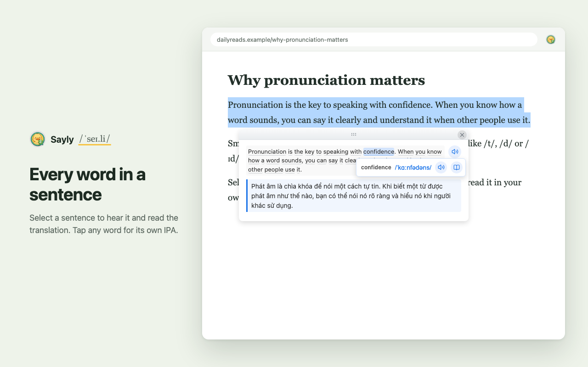
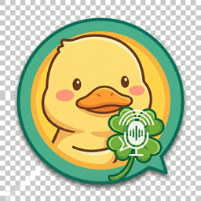

Sayly
Browser extension · TypeScriptSelect English text on any web page to hear it spoken, see the IPA for every word and read a translation into 34 languages. Built for English learners, with a bundled 126,000-word dictionary so most lookups stay in the browser.